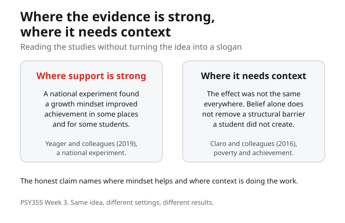
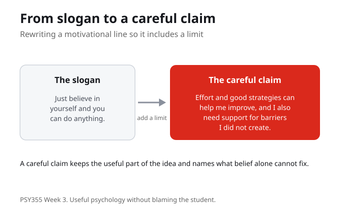

Growth mindset
A growth mindset is the belief that ability can develop over time, rather than being set in advance. In plain terms, it treats learning as something that can grow with effort and good strategies. The aim this week is to explain this idea without turning it into a slogan, so the psychology stays useful and honest.
A growth mindset is a belief that ability can develop, not a promise that belief alone is enough. Explaining it without turning it into a slogan keeps the idea useful.
In your own words, how would you explain a growth mindset to someone who has never heard the term?
Fixed mindset
A fixed mindset is the contrast: it treats ability as set, as something you either have or do not. Naming the contrast is useful because it shows what a growth mindset is reacting to. Neither label is a personality verdict. The point is to read a learning situation, not to sort students into types.
A fixed mindset treats ability as set. The contrast clarifies the growth mindset, but neither label is a verdict on a person.
In your own words, how would you explain a fixed mindset, and why is it not a label for a kind of person?

Where the evidence is strong
This is where evidence matters. The national experiment by Yeager and colleagues found that a growth mindset improved achievement in some places and for some students, not equally everywhere. That nuance is the point: the study shows where a growth mindset can help, while making clear the effect depends on context. Use evidence to describe where mindset interventions may help, rather than claiming they always work.
The national experiment shows a growth mindset improved achievement in some places and for some students. The effect depends on context, so the honest claim names where it helps.
From the evidence this week, where does a growth mindset seem to help, and what does that depend on?
Limits and structural barriers
The other half of the week is the limit. The course moves into mindset evidence while avoiding the false idea that belief alone fixes structural barriers. Claro and colleagues studied growth mindset alongside the effects of poverty on academic achievement, which is a caution against treating mindset as a substitute for support. Mindset work must not blame students for barriers they did not create.
Belief alone does not fix a structural barrier. A growth mindset must not blame students for barriers they did not create, which is why context is part of the concept, not an add on.
When might the phrase growth mindset become too simple, and who could it end up blaming?

A careful claim that includes a limit
Yeager and Dweck ask what can be learned from growth mindset controversies, which is a balanced handling of the evidence and its limits. The practical move this week is to write a careful growth mindset claim that includes a limit. In the practice activity, students rewrite a common motivational slogan into a careful, evidence aware statement: one that keeps the useful part of the idea and names what belief alone cannot fix.
A careful claim keeps the useful part of the idea and names a limit. Rewriting a slogan into an evidence aware statement is the skill the controversies paper points toward.
Take one motivational slogan and rewrite it so it includes an honest limit. What did you change?
What You Are Learning This Week
Growth Mindset Is a Belief, Not a Slogan
A growth mindset is the belief that ability can develop over time, while a fixed mindset treats it as set. The aim is to explain the idea in plain terms without turning it into a slogan, so the psychology stays useful.
Evidence Shows Where It Helps
The national experiment by Yeager and colleagues found a growth mindset improved achievement in some places and for some students, not equally everywhere. Use evidence to describe where mindset interventions may help rather than assuming they always work.
Belief Alone Does Not Fix Barriers
The course avoids the false idea that belief alone fixes structural barriers. Claro and colleagues studied growth mindset alongside the effects of poverty, a caution that mindset work must not blame students for barriers they did not create.
Write the Careful Claim
Yeager and Dweck show what can be learned from the controversies: a balanced handling of evidence and limits. The practice is to rewrite a motivational slogan into a careful, evidence aware statement that keeps the useful part and names the limit.